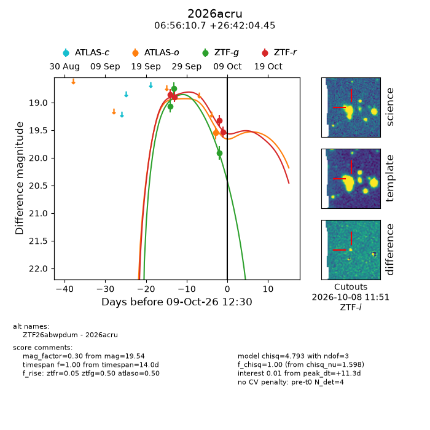
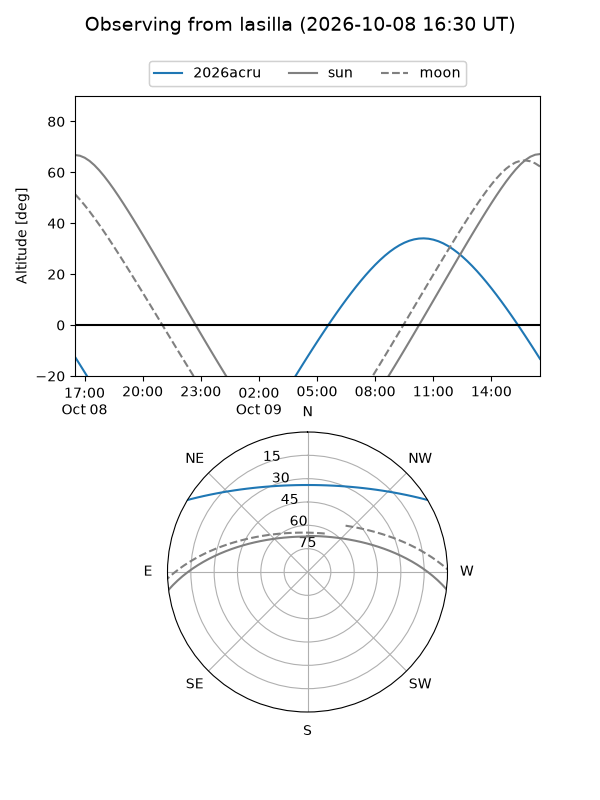
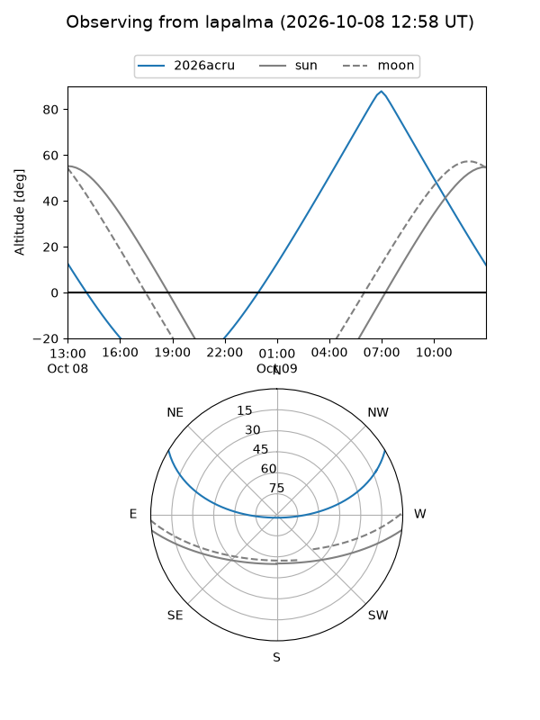
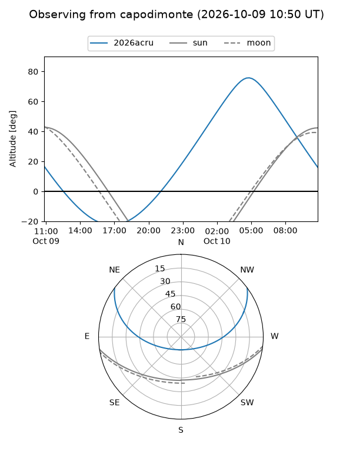
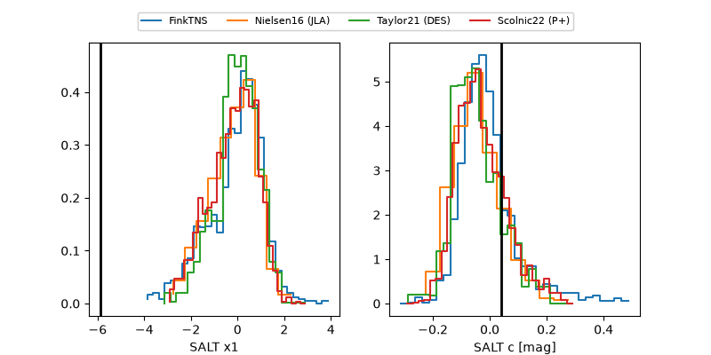

2026acru
Target 2026acru at 2026-10-09 12:32
Aliases and brokers:
FINK-ZTF: ztf.fink-portal.org/ZTF26abwpdum
Lasair-ZTF: lasair-ztf.lsst.ac.uk/objects/ZTF26abwpdum
ALeRCE-ZTF: alerce.online/object/ZTF26abwpdum
YSE-PZ: ziggy.ucolick.org/yse/transient_detail/2026acru
TNS name: wis-tns.org/object/2026acru
Direct TNS query: direct search
alt names
ZTF26abwpdum (ztf,fink_ztf)
2026acru (tns,yse)
Coordinates:
equatorial (ra, dec) = 104.0446,+26.70124
equatorial (HMS+DMS) = 06:56:10.70,+26:42:04.45
galactic (l, b) = (189.2639,+12.78748)
Flags:
peak dt: +11.3
Photometry:
last atlaso=19.55, ztfg=19.91, ztfr=19.54
1 atlaso, 3 ztfg, 4 ztfr detections
Lightcurve

Visibility



Additional plots
